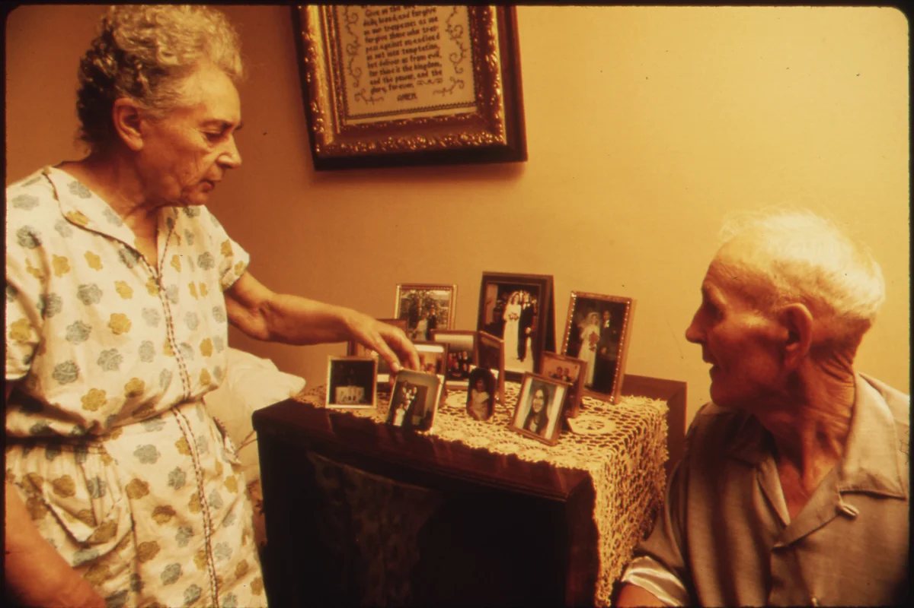
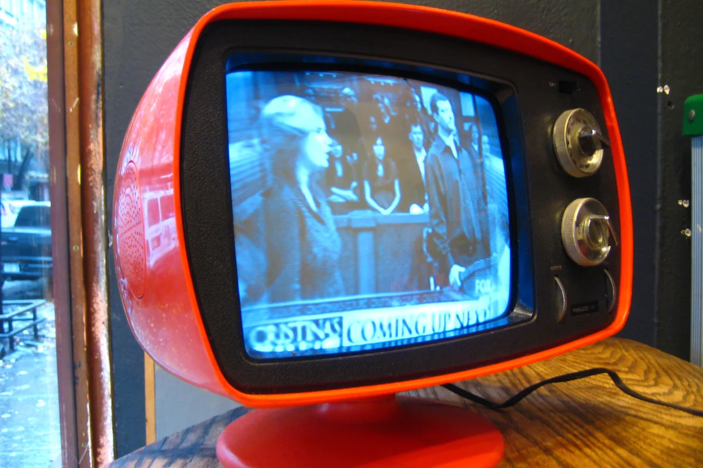

TV & entertainment - 1970s
When the whole family watched the same show
One television, a favorite seat, and a theme tune that brought everyone into the room.

An appointment in the living room
For many households, watching a favorite show meant being there when it began. You might finish dinner a little faster or claim a place on the sofa before someone else took it. The evening had a small event at its center.

Perhaps you could hear the opening music from another room and knew whose footsteps would follow. You might arrive carrying a cushion, or squeeze onto the end of the sofa. Once everyone had found a place, the room seemed to settle in around the picture.
Everybody had an opinion
Someone preferred a comedy. Someone wanted the game. Someone insisted the picture looked better after adjusting the antenna. Sharing a screen meant sharing the decisions, and occasionally negotiating them with impressive determination.
You may remember looking away from the set to see whether someone agreed with you. A raised eyebrow could be as good as a reply. Sometimes the discussion continued long after a choice had been made, with each person quite sure their program would have been better.
Even the ordinary moments stayed with us
A bowl of popcorn, a blanket over your knees, the sound of a familiar opening tune: these were modest things. Yet they helped turn a room into a scene we can still remember. Sometimes the person beside you mattered more than what was on.

Perhaps someone got up and asked whether anybody wanted anything from the kitchen. You might still remember the lamp that stayed on, or a familiar pair of slippers near the chair. Nothing about the evening had to be unusual for the scene to stay with you.
The conversation carried on the next day
A funny line or surprising ending could travel beyond the living room. You brought it to school, work, or a phone call with a friend. A show gave people a little shared territory, something easy to ask about and enjoy together.
Maybe you began with, "Did you see it?" and needed no more introduction. You could discover that a friend had laughed in the very same place. Or you might hear a detail you missed because somebody at home had been talking, and promise yourself to pay closer attention next time.
What was your family’s show?
Try remembering where everyone sat. Who laughed first? Who always talked over the dialogue? And which theme tune could still bring the whole room back to you?
Share a detail with someone who watched beside you. They might remember who really claimed that favorite seat.
All stories · Explore the decades
← Back to the games · All articles · About · Privacy policy · Photo credits · Cookie settings